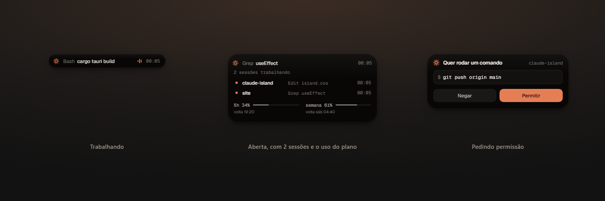

Aprova sem trocar de janela
O pedido de permissão aparece na ilha com Permitir e Negar. Se você não clicar em 30 segundos, ele volta para o terminal como sempre.
Claude Island é uma pílula sempre no topo da tela, no Windows, no Mac e no Linux. Ela mostra a ferramenta que o Claude está usando, há quanto tempo, e os pedidos de permissão, que você aprova ali mesmo.
Baixar grátisVersão 0.9.0 · grátis · código aberto (MIT)

O pedido de permissão aparece na ilha com Permitir e Negar. Se você não clicar em 30 segundos, ele volta para o terminal como sempre.
Com dois ou mais projetos rodando, a pílula mostra quantos são. Aberta, mostra uma linha por projeto com a ferramenta e o tempo de cada um.
Some durante chamadas no Meet, Teams, Zoom ou WhatsApp, em jogo ou vídeo em tela cheia e no horário de não perturbe que você marcar.
Passe o mouse e veja quanto já usou da janela de 5 horas e da semana, e a hora em que cada uma zera.
No Windows, o instalador liga os hooks no seu ~/.claude/settings.json e guarda um backup antes. No Mac e no Linux, o app faz isso na primeira vez que abre.
Sessões que já estavam abertas só mandam eventos depois de reiniciadas.
Arraste a ilha para qualquer canto ou para o meio de uma lateral. Clique no ícone da bandeja para configurar.
Windows 10 ou 11, macOS 11 ou mais novo, ou Linux com X11 (ou XWayland), além do Claude Code e do Node.js. O Node roda os dois scripts que conversam com a ilha.
Adiciona os hooks no ~/.claude/settings.json e, se você não tiver nenhuma, uma statusline que manda o uso do plano. Faz backup antes. Desinstalar pelo Windows tira os dois.
Funciona em qualquer sessão do Claude Code que leia o ~/.claude/settings.json: no terminal e na aba Code do app Claude.
O servidor escuta só em 127.0.0.1, aceita apenas JSON e recusa pedidos vindos do navegador. O código está aberto no GitHub para quem quiser conferir.
Os instaladores não têm assinatura digital. No Windows, clique em "Mais informações" e depois em "Executar assim mesmo". No Mac, clique com o botão direito no app e escolha "Abrir".
Quase. No Mac a ilha não sabe qual app usa o microfone: ela some quando o microfone está em uso e um app marcado está aberto, e ainda não detecta tela cheia. No Linux ela precisa do X11 ou do XWayland. O autor testa no Windows; Mac e Linux são compilados pelo GitHub Actions.
Só para os planos Pro, Max e Ultra, e depois da primeira resposta de cada sessão. É o Claude Code que entrega esses números.
Não. É um projeto pessoal, sem ligação com a Anthropic. "Claude" e "Claude Code" são marcas da Anthropic.